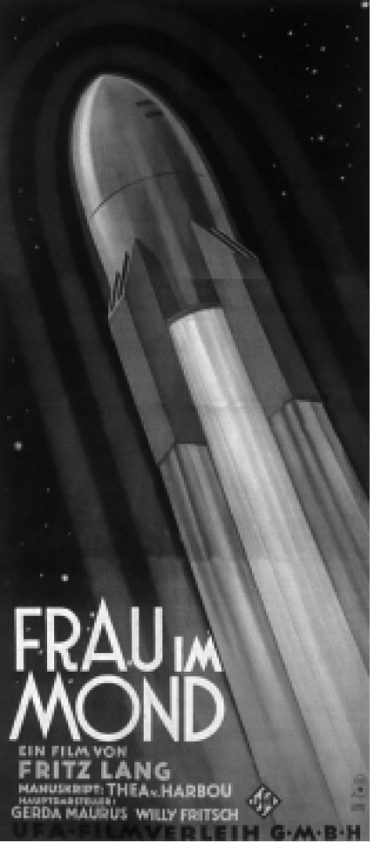

从乔治·梅里爱1902年的电影《月球旅行记》起，宇宙飞船就成了科幻的关键符号象征之一，其流线型的火箭设计，是对自由和逃离的承诺。弗里茨·兰的《月球上的女人》（1929）描述了让一对恋人最终困于月球的太空漫游，在最后一幕，他们互相拥抱，电影达到了浪漫的高潮，同时也预兆了迫近的死亡。这部电影首次使用了火箭倒计时发射，托马斯·品钦《万有引力之虹》（1973）中V–2火箭发射用的就是这种计时法，火箭工程师赫尔曼·奥伯斯特为此提供了技术咨询服务。埃德温·巴尔默和菲利普·怀利合著的小说《星球大冲撞》（1933）中，宇宙飞船充当了救生船的角色。两颗流浪星球被发现正朝地球而来，其中一颗接近地球时，巨型潮汐波、飓风、火山喷发这样的灾异迹象在地球上呈倍增效应。此时地球人建造了一艘宇宙飞船来救幸存的人类脱离险境，飞船刚刚发射出去，船上的人就目睹了地球的毁灭。但是他们发现第二颗星球实际上是可以住人的，而且这个新地球上显示出生命存在的迹象。这部小说在重新开始生活的乐观希望中结束，其乐观主义实际上掩盖了人类在这颗星球上活下去所要面临的无数实际问题。

图2 弗里茨·兰《月球上的女人》（1929）的电影海报
在20世纪的上半叶，太空漫游占据了科幻的主流位置，A.E.范·沃格特的《“小猎犬号”太空漫游》（1950）是其中最有名的小说之一。这部小说是作者之前所写短篇小说的合集，书名致敬了达尔文周游世界时所写的博物学日志《“小猎犬号”航海日记》（1839）。范·沃格特笔下的漫游是为耐克希尔基金会进行的科学发现之旅，作者使用了达尔文的假设，即同其他物种的接触会导致冲突。“小猎犬号”宇宙飞船经历了四次外星文明接触，一次比一次虚幻：第一次是同一种猫一样的生物，第二次是同一种具有心灵感应能力的鸟类，第三次是同一种生活在太空中并且想要在人类宿主身上产卵的生物，最后是同一种存在于太空中的至大无边的意识。范·沃格特的情节描写多以外星文明接触为重，他这部小说同时也是首批描写宇宙飞船船员们一起工作的小说之一。
对传统的宇宙飞船形象做出了重要修正的小说是安妮·麦卡弗里的“海尔法”系列，该系列始于1961年，第一部名为《唱歌的船》。“海尔法”的背景时间设定在未来，严重残疾的儿童有机会通过密封在与大脑直接相连的金属外壳中而成为宇宙飞船，这一提升其机能的过程包含了被称为“教育”（而非程序化）的过程，复杂的神经、知觉通过钛制外壳而连接起来。从这点来看，“外壳人”是赛博格的原型，麦卡弗里的叙事以海尔法通过设计一种歌唱的方式而进行的个人探索和自我改造替代了中心控制技术。对海尔法而言，太空航行是一种成人礼性质的探险，而非目的明确的科学发现之旅。海尔法的金属外壳是她意识的延伸，所以她自然而然地展现了太空飞行的技术能力（到20世纪60年代为止，飞行员还是清一色的男性），并且在飞行的过程中形成了自己的情感能力，例如学会了哀悼。与这部小说相似的是内奥米·米钦森的《女宇航员的回忆录》（1962），它以对叙事者同其他物种的关系的反思取代了快速的动作场景。